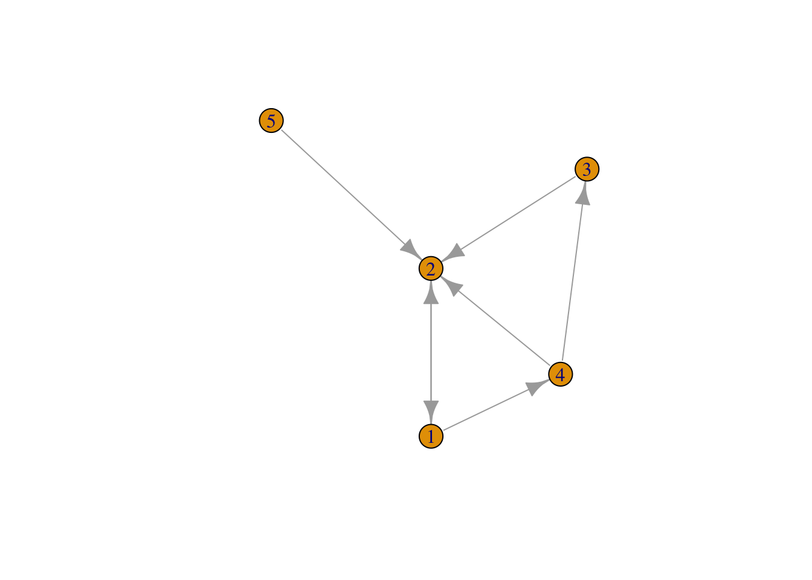
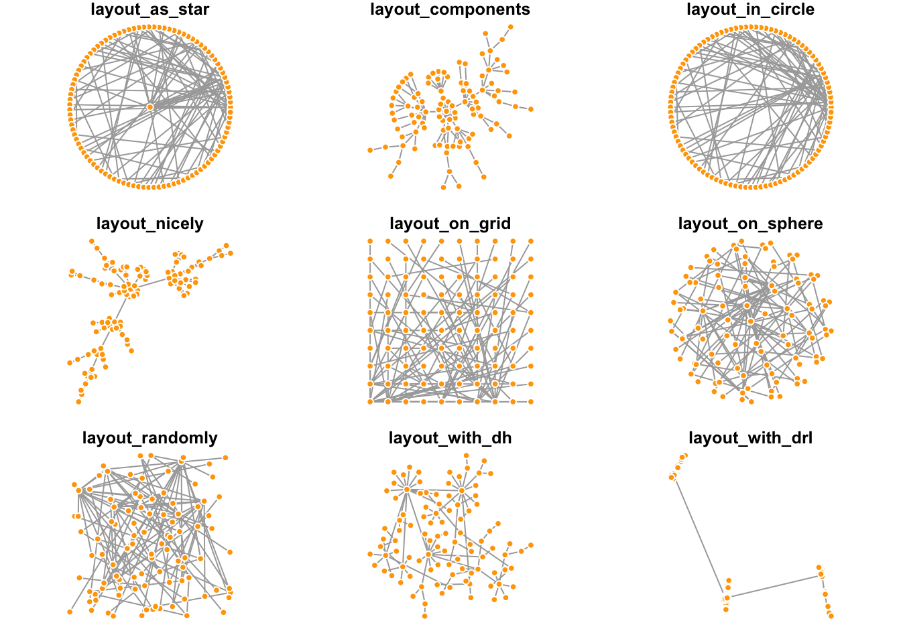
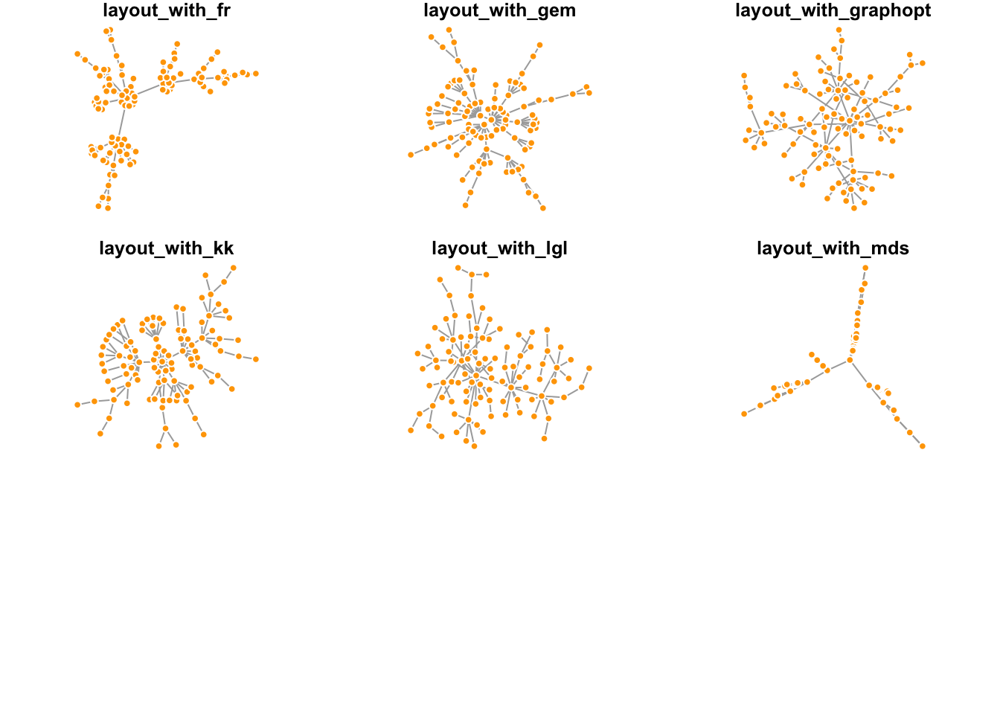
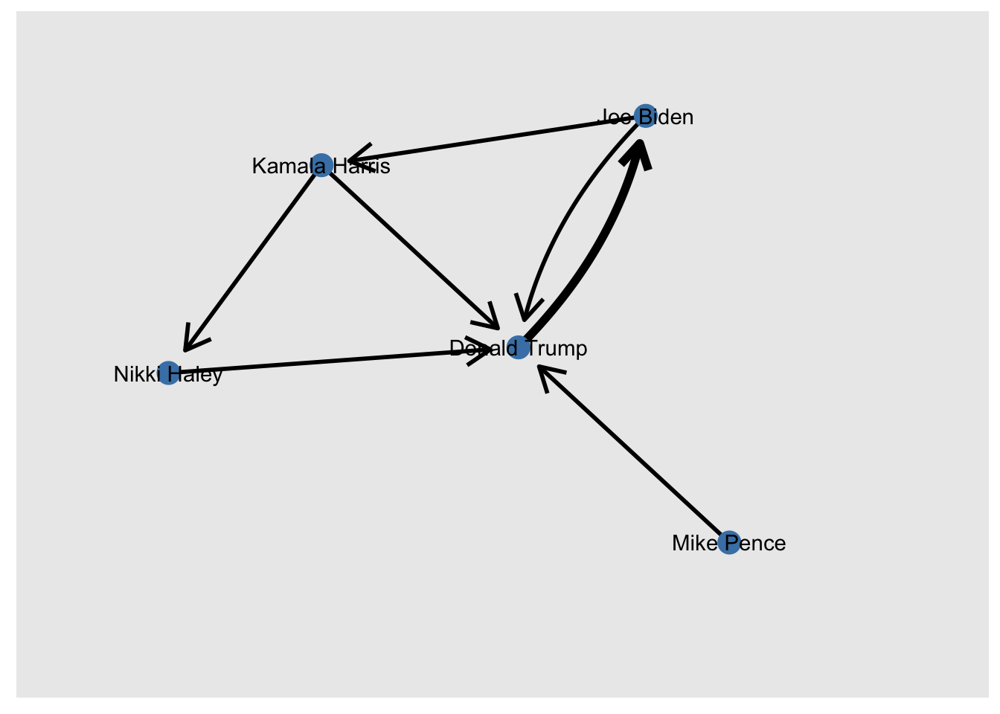
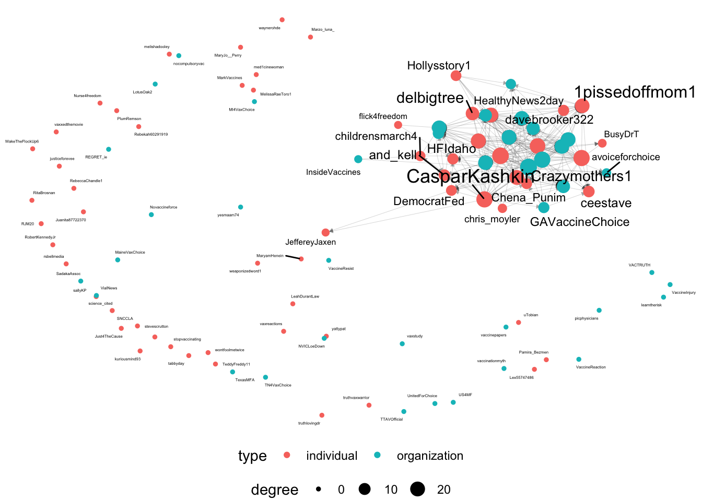

library(tidyverse)
library(igraph)
library(tidygraph)
library(ggraph)Week 11 Lab
Network analysis
Many types of data, especially social media data, can often be represented as networks. There are a few packages in R Universe that can help with handling and visualizing network (and they could be rather confusing), including:
igraphsnatidygraphfor network objects manipulationggraphfor network visualizationstatnetfor network (inferential) statistical analysis
Network data format:
- Matrix
- Edge list
Network metrics:
- Individual level: characteristic of nodes
- Global level: characteristics of overall network
- Local level: characteristics of components
Types of network:
- Directed network
- Undirected network
- Weighted network
- Bipartite network
- Multilevel/Multiplex network
- Ego network
Creating a network
- Edgelist
retweet_edge <- data.frame(
"from" = c("Joe Biden", "Nikki Haley","Joe Biden", "Mike Pence", "Kamala Harris", "Kamala Harris", "Donald Trump", "Donald Trump"),
"to" = c("Donald Trump", "Donald Trump", "Kamala Harris", "Donald Trump", "Nikki Haley", "Donald Trump", "Joe Biden", "Joe Biden"))
retweet_edge <- retweet_edge %>%
group_by(from, to) %>%
summarize(weight = n())`summarise()` has grouped output by 'from'. You can override using the
`.groups` argument.retweet_node <- data.frame(
"Name" = c("Joe Biden", "Donald Trump", "Nikki Haley", "Kamala Harris", "Mike Pence"),
"Gender" = c("M", "M", "F", "F", "M"),
"Party" = c("D", "R", "R", "D", "R"),
"Age" = c(80, 77, 51, 59, 64))
g <- tbl_graph(edges = retweet_edge, nodes = retweet_node, directed = T)
plot(g)
g# A tbl_graph: 5 nodes and 7 edges
#
# A directed simple graph with 1 component
#
# Node Data: 5 × 4 (active)
Name Gender Party Age
<chr> <chr> <chr> <dbl>
1 Joe Biden M D 80
2 Donald Trump M R 77
3 Nikki Haley F R 51
4 Kamala Harris F D 59
5 Mike Pence M R 64
#
# Edge Data: 7 × 3
from to weight
<int> <int> <int>
1 2 1 2
2 1 2 1
3 1 4 1
# … with 4 more rows- Matrix
retweet_edge <- data.frame(
"from" = c("Joe Biden", "Nikki Haley","Joe Biden", "Mike Pence", "Kamala Harris", "Kamala Harris", "Donald Trump", "Donald Trump"),
"to" = c("Donald Trump", "Donald Trump", "Kamala Harris", "Donald Trump", "Nikki Haley", "Donald Trump", "Joe Biden", "Joe Biden"))
graph <- graph_from_data_frame(retweet_edge, directed = TRUE)
as_adjacency_matrix(graph, sparse = FALSE) Joe Biden Nikki Haley Mike Pence Kamala Harris Donald Trump
Joe Biden 0 0 0 1 1
Nikki Haley 0 0 0 0 1
Mike Pence 0 0 0 0 1
Kamala Harris 0 1 0 0 1
Donald Trump 2 0 0 0 0Visualizing a network
We will be using ggraph to visualize the network in this tutorial, though igraph did a pretty decent work (and you can check out more tutorials from Dr.Katya Ognyanova’s blog. ggraph is a set of tools based on ggplot2, and you can build a plot by adding layers according to a grammar of graphics we mentioend before. As there are so many cool tools, here is just going to focus on standard plots that show nodes as circles and edges as lines. There are three key components that should be part of any of these plots:
- edges
- nodes
- layout
Edges
To be noted, the following code is only showing the edges but not the nodes. All of the different edge options start with geom_edge_, so if you start typing that then R’s autocomplete will show you the options, and you can play around by changing them around.
g %>%
ggraph() +
geom_edge_fan() +
theme_void()Using "stress" as default layoutWarning: Using the `size` aesthetic in this geom was deprecated in ggplot2 3.4.0.
ℹ Please use `linewidth` in the `default_aes` field and elsewhere instead.Nodes
Next, we’ll add the nodes. As what we have learned in ggplot, we can also treat the nodes like just another layer of the plot.
g %>%
ggraph() +
geom_edge_fan() +
geom_node_point() +
theme_void()Using "stress" as default layoutAesthetic parameters
The plot above looks boring…and we can certainly change that! For example, maybe we think that the edges are too thick, and that they should be RIT orange instead! Additionally, since it is a directed network, we can use arrow to represent the direction. Lastly, we can also change the color, size and shape of the nodes as well!
g %>%
ggraph() +
geom_edge_fan(width = 0.5, color = "#F76902",
arrow = arrow(length = unit(4, 'mm')),
end_cap = circle(2, 'mm')) +
geom_node_point(shape = "triangle", size = 5, color = "steelblue") +
theme_void()Using "stress" as default layoutBut usually, you would also like to know who do these nodes represent for - here comes with the information in the nodelist dataframe.
g %>%
ggraph() +
geom_edge_fan(width = 0.5, color = "#F76902",
arrow = arrow(length = unit(4, 'mm')),
end_cap = circle(2, 'mm')) +
geom_node_point(size = 5, color = "steelblue") +
geom_node_text(aes(label = Name)) +
coord_cartesian(xlim=c(-1,1.5), ylim = c(-1,1))Using "stress" as default layoutOr you probably wanna remove those nodes too.
g %>%
ggraph() +
geom_edge_fan(width = 0.5, color = "#F76902",
aes(start_cap = label_rect(node1.Name),
end_cap = label_rect(node2.Name)),
arrow = arrow(length = unit(4, 'mm'))) +
geom_node_text(aes(label = Name)) +
coord_cartesian(xlim=c(-1,1.5), ylim = c(-1,1))Using "stress" as default layoutLayout
The layout is where nodes appear on a graph. There are lots of different algorithms that can be used; some of them are very basic – like putting the nodes in a circle or just scattering them randomly. Most of the layouts we will use are based on algorithms that try to keep nodes which are connected to each other close together and unconnected nodes far apart from each other.
You can let ggraph choose a layout for you or you can look through some here and here. For instance, let’s take a look at all available layouts in igraph:
net_example <- sample_pa(100)
V(net_example)$size <- 8
V(net_example)$frame.color <- "white"
V(net_example)$color <- "orange"
V(net_example)$label <- ""
E(net_example)$arrow.mode <- 0
set.seed(123)
layouts <- grep("^layout_", ls("package:igraph"), value=TRUE)[-1]
# Remove layouts that do not apply to our graph.
layouts <- layouts[!grepl("bipartite|merge|norm|sugiyama|tree", layouts)]
par(mfrow=c(3,3), mar=c(1,1,1,1))
for (layout in layouts) {
print(layout)
l <- do.call(layout, list(net_example))
plot(net_example, edge.arrow.mode=0, layout=l, main=layout) }[1] "layout_as_star"[1] "layout_components"[1] "layout_in_circle"[1] "layout_nicely"[1] "layout_on_grid"[1] "layout_on_sphere"[1] "layout_randomly"[1] "layout_with_dh"[1] "layout_with_drl"
[1] "layout_with_fr"[1] "layout_with_gem"[1] "layout_with_graphopt"[1] "layout_with_kk"[1] "layout_with_lgl"[1] "layout_with_mds"
Now, let’s come back to ggraph and our politician retweet network.
g %>%
ggraph(layout = "kk") +
geom_edge_fan(width = 0.5,
arrow = arrow(length = unit(4, 'mm')),
end_cap = circle(4, 'mm')) +
geom_node_point(size = 5, color = "steelblue") +
geom_node_text(aes(label = Name)) +
coord_cartesian(xlim=c(-1.5,1.5), ylim = c(-1.5,1.5))Mapping aesthetics (from nodal or dydic attributes)
Firstly, you can modify the size of the edges based on the weight. And if you are visualize the a multiplex network, you can also specify the color for different types of edge.
g %>%
ggraph(layout = "kk") +
geom_edge_fan(aes(width = weight),
arrow = arrow(length = unit(5, 'mm')),
end_cap = circle(5, 'mm')) +
scale_edge_width(range = c(1, 2))+
geom_node_point(size = 5, color = "steelblue") +
geom_node_text(aes(label = Name)) +
coord_cartesian(xlim=c(-1.5,1.5), ylim = c(-1.5,1.5)) +
theme(legend.position = "none")
Second, you can also change the size, shape and color of the nodes based on the nodal attributes.
g %>%
ggraph(layout = "kk") +
geom_edge_fan(aes(width = weight),
arrow = arrow(length = unit(5, 'mm')),
end_cap = circle(5, 'mm')) +
scale_edge_width(range = c(1, 2))+
geom_node_point(aes(size = Age), color = "steelblue") +
scale_size(range = c(5,10)) +
geom_node_text(aes(label = Name)) +
coord_cartesian(xlim=c(-1.5,1.5), ylim = c(-1.5,1.5))g %>%
ggraph(layout = "kk") +
geom_edge_fan(aes(width = weight),
arrow = arrow(length = unit(5, 'mm')),
end_cap = circle(5, 'mm')) +
scale_edge_width(range = c(1, 2))+
geom_node_point(aes(size = Age, color = Party, shape = Gender)) +
scale_size(range = c(5,10)) +
scale_color_manual(values = c("steelblue", "darkred")) +
geom_node_text(aes(label = Name)) +
coord_cartesian(xlim=c(-1.5,1.5), ylim = c(-1.5,1.5))g %>%
ggraph(layout = "kk") +
geom_edge_parallel(aes(width = weight),
arrow = arrow(length = unit(4, 'mm')),
end_cap = circle(5, 'mm')) +
scale_edge_width(range = c(1, 2))+
geom_node_point(aes(size = Age, color = Party)) +
scale_size(range = c(5,10)) +
scale_color_manual(values = c("steelblue", "darkred")) +
geom_node_text(aes(label = Name)) +
coord_cartesian(xlim=c(-2,2), ylim = c(-2,2)) +
facet_nodes(~Gender)g %>%
ggraph(layout = "kk") +
geom_edge_parallel(aes(width = weight, start_cap = label_rect(node1.Name),
end_cap = label_rect(node2.Name)),
arrow = arrow(length = unit(3, 'mm'), type = "closed")) +
scale_edge_width(range = c(1, 2))+
geom_node_text(aes(label = Name, size = Age, color = Party)) +
scale_size(range = c(3,6)) +
scale_color_manual(values = c("steelblue", "darkred")) +
coord_cartesian(xlim=c(-1.5,1.5), ylim = c(-1.5,1.5)) +
theme(legend.position = "none")Network statistics
Let’s play with some real-world data! We have collected the tweets from 100 anti-vaxxers and 100 pro-vaxxers on X (formly Twitter) during the COVID-19 outbreak. We have examined the linguistic regularities (in terms of sentiment analysis and topic modeling) and audience engagement of vaccine debate in this paper. But we will be focusing on the anti-vaxxer following network here.
anti_edge <- read.csv("Data/Anti_follow_edgelist.csv")
anti_node <- read.csv("Data/Anti attribute.csv")
vax_g <- tbl_graph(edges = anti_edge, nodes = anti_node, directed = T)
plot(vax_g)vax_g# A tbl_graph: 100 nodes and 3592 edges
#
# A bipartite simple graph with 1 component
#
# Node Data: 100 × 5 (active)
name category type group retweet
<chr> <chr> <chr> <chr> <int>
1 1pissedoffmom1 Anti-vaxxer individual Leader 23
2 Alec_Zeck Anti-vaxxer individual Leader 31
3 AliBeckZeck Anti-vaxxer individual Leader 24
4 and_kell Anti-vaxxer individual Leader 44
5 avoiceforchoice Anti-vaxxer organization Leader 41
6 BardsFM Anti-vaxxer organization Active 5
# … with 94 more rows
#
# Edge Data: 3,592 × 3
from to weight
<int> <int> <int>
1 1 2 1
2 1 4 1
3 1 5 1
# … with 3,589 more rowsvax_g %>%
activate(nodes) %>%
mutate(degree = centrality_degree(mode = 'in')) %>%
ggraph(layout = "kk", maxiter = 500) +
geom_edge_fan(width = 0.1, alpha = 0.3,
arrow = arrow(length = unit(1, 'mm'), type = "closed"),
end_cap = circle(1, 'mm')) +
geom_node_point(aes(color = type, size = degree)) +
geom_node_text(aes(label = name, size = degree), repel = TRUE) +
scale_size(range = c(1,5)) +
theme_void() +
theme(legend.position = "bottom",
legend.box = "vertical")Warning: ggrepel: 30 unlabeled data points (too many overlaps). Consider
increasing max.overlapsGlobal level: characteristics of overall network
Numbers of nodes:
vax_g %>% gorder()[1] 100Number of edges:
vax_g %>% gsize()[1] 3592Number of mutual edges:
vax_g %>% activate(edges) %>% filter(edge_is_mutual()) %>% gsize()[1] 1792Centralization:
vax_g %>% centralization.degree()$res
[1] 90 42 54 100 80 66 93 121 43 103 84 108 54 18 84 80 98 15
[19] 114 89 115 116 97 90 54 46 52 71 38 56 90 23 59 67 116 96
[37] 91 91 106 52 8 77 90 60 35 110 91 55 28 107 27 21 72 142
[55] 88 95 71 95 77 115 18 88 44 62 75 106 2 108 95 125 56 100
[73] 85 93 83 53 109 113 28 66 69 85 38 18 20 98 48 60 31 72
[91] 64 92 112 103 36 50 98 40 8 7
$centralization
[1] 0.3579227
$theoretical_max
[1] 19602vax_g %>% centralization.betweenness()$res
[1] 49.4654480 104.3938549 22.0824052 91.4347910 24.5567904 11.2710042
[7] 248.2490001 263.7111094 7.2827756 202.9724272 34.2836126 201.6733048
[13] 23.9889050 2.0772438 35.3454548 42.4280047 56.0835907 0.1695439
[19] 336.1119250 50.7477771 159.9935619 96.9590159 110.4376388 69.4974754
[25] 47.7505548 9.0518187 4.3144072 46.2212983 76.5391388 8.9767022
[31] 36.6869808 3.4912136 23.0664501 13.7463310 261.3495842 213.3678415
[37] 26.9607467 49.3194240 125.9289776 11.4979016 0.1350140 38.2886904
[43] 30.2625276 5.1539275 20.9426523 91.2945294 88.7023684 22.2154799
[49] 1.4334736 124.9101226 7.1596987 0.3494370 28.2955361 483.5711047
[55] 56.2746100 128.9294017 14.2229028 76.9579357 55.9222028 153.5567555
[61] 1.5334343 40.8709108 36.0052884 13.0192986 2.1761744 164.6563184
[67] 0.0000000 113.1276019 109.4580669 202.1559044 8.5980182 112.8242690
[73] 73.8544454 38.3437656 64.7584437 17.7302193 111.1967469 141.5880785
[79] 7.0953348 30.3441615 33.5049603 176.8448928 5.3189898 195.5047461
[85] 2.0535551 54.4218559 1.1175548 4.9218547 1.7941797 7.2308916
[91] 5.7283567 113.0538172 298.4238348 88.3156001 9.7051636 13.8304011
[97] 53.2789894 22.5494726 0.0000000 0.0000000
$centralization
[1] 0.04304862
$theoretical_max
[1] 960498vax_g %>% centralization.closeness()$res
[1] 0.6600000 0.5500000 0.5892857 0.6875000 0.5657143 0.5530726 0.5530726
[8] 0.7443609 0.5322581 0.6923077 0.6644295 0.5857988 0.6305732 0.5129534
[15] 0.6428571 0.6346154 0.7795276 0.5210526 0.6644295 0.4736842 0.7443609
[22] 0.7071429 0.6971831 0.6556291 0.5755814 0.5439560 0.5963855 0.5823529
[29] 0.4829268 0.6073620 0.4714286 0.4950000 0.6000000 0.4230769 0.6971831
[36] 0.5823529 0.7443609 0.5963855 0.6971831 0.6111111 0.4380531 0.5892857
[43] 0.7674419 0.3561151 0.5156250 0.8319328 0.6428571 0.6073620 0.5439560
[50] 0.7443609 0.5351351 0.5156250 0.6226415 0.8461538 0.6305732 0.6600000
[57] 0.3852140 0.7920000 0.4805825 0.7333333 0.4230769 0.6875000 0.5265957
[64] 0.6689189 0.3793103 0.6644295 0.2750000 0.7122302 0.6305732 0.8181818
[71] 0.6346154 0.6387097 0.6923077 0.7674419 0.7279412 0.5625000 0.7279412
[78] 0.7226277 0.4805825 0.6226415 0.6780822 0.5439560 0.4805825 0.3778626
[85] 0.4323144 0.7388060 0.4805825 0.4925373 0.4714286 0.7333333 0.4852941
[92] 0.6644295 0.7279412 0.6644295 0.5351351 0.5857988 0.7674419 0.5500000
[99] NaN NaN
$centralization
[1] NaN
$theoretical_max
[1] 98.01vax_g %>% centralization.evcent()$vector
[1] 0.692165203 0.339814664 0.429380441 0.745768669 0.599260231 0.507726726
[7] 0.622479107 0.865567805 0.340831312 0.748964736 0.651436508 0.761647032
[13] 0.395200506 0.129921537 0.645717166 0.604852879 0.738495791 0.131429963
[19] 0.782908461 0.629725505 0.852825876 0.872661787 0.720826096 0.701802091
[25] 0.396911110 0.361392276 0.429989187 0.541633016 0.268934110 0.428806662
[31] 0.634376645 0.171795654 0.450440775 0.501247427 0.805050740 0.669749196
[37] 0.699693245 0.682500160 0.812105294 0.399154689 0.062748520 0.581421404
[43] 0.684693049 0.429747786 0.264522581 0.794991287 0.696055331 0.395651022
[49] 0.209536201 0.803846956 0.194955641 0.166033285 0.526241040 1.000000000
[55] 0.656784994 0.696345461 0.499218149 0.705532441 0.553289533 0.826234618
[61] 0.140675949 0.693015353 0.299323736 0.478379008 0.527971400 0.768853089
[67] 0.002355726 0.815267943 0.713791395 0.892391030 0.412587742 0.746980072
[73] 0.618873632 0.699127746 0.610101996 0.416276412 0.800854731 0.808248509
[79] 0.209678692 0.483374399 0.533265816 0.592881346 0.298290908 0.101156529
[85] 0.156783691 0.752065846 0.378690340 0.457756066 0.255877870 0.530418169
[91] 0.471390353 0.687296892 0.764338928 0.764453788 0.269300282 0.391609666
[97] 0.747842009 0.309328896 0.060104714 0.050840776
$value
[1] 85.8814
$options
$options$bmat
[1] "I"
$options$n
[1] 100
$options$which
[1] "LA"
$options$nev
[1] 1
$options$tol
[1] 0
$options$ncv
[1] 0
$options$ldv
[1] 0
$options$ishift
[1] 1
$options$maxiter
[1] 3000
$options$nb
[1] 1
$options$mode
[1] 1
$options$start
[1] 1
$options$sigma
[1] 0
$options$sigmai
[1] 0
$options$info
[1] 0
$options$iter
[1] 1
$options$nconv
[1] 1
$options$numop
[1] 20
$options$numopb
[1] 0
$options$numreo
[1] 10
$centralization
[1] 0.4772973
$theoretical_max
[1] 98Individual level: Identifying the most central nodes
We can also show the most central nodes in a table. We already know how to calculate centrality measures. After we calculate them, we have to take a step that’s a bit more complicated—basically, we take our node spreadsheet and temporarily convert it back to a “normal” R spreadsheet (a.k.a., tibble), and then manipulate the spreadsheet. That’s what the as_tibble() line below does.
After it’s in a spreadsheet, the select command is the list of columns we want to keep for our table, the arrange command sorts the table (the - before bw_centrality sorts it in reverse order, from highest to lowest). Finally, the head command shows the top N nodes.
Betweeness centrality
vax_g %>%
activate(nodes) %>%
mutate(bw_centrality = centrality_betweenness()) %>%
as_tibble() %>%
select(name, bw_centrality) %>%
arrange(-bw_centrality) %>%
head(10)# A tibble: 10 × 2
name bw_centrality
<chr> <dbl>
1 MI4VaxChoice 484.
2 davebrooker322 336.
3 waynerohde 298.
4 BusyDrT 264.
5 ICANdecide 261.
6 Believe_Mothers 248.
7 InsideVaccines 213.
8 CasparKashkin 203.
9 science_cited 202.
10 Chena_Punim 202.Degree centrality
Simiarily, we can also calculate the top 10 accounts which receive the most follows:
vax_g %>%
activate(nodes) %>%
mutate(dg_centrality = centrality_degree(mode = "in")) %>%
as_tibble() %>%
select(name, dg_centrality) %>%
arrange(-dg_centrality) %>%
head(10)# A tibble: 10 × 2
name dg_centrality
<chr> <dbl>
1 Chena_Punim 78
2 debnantz 77
3 HFIdaho 77
4 Believe_Mothers 72
5 RJM20 72
6 Nurse4freedom 68
7 US4MF 68
8 InsideVaccines 67
9 davebrooker322 64
10 ICANdecide 60Closeness centrality
Simiarily, we can also calcuate the top 10 accounts with the highest closeness centrality:
vax_g %>%
activate(nodes) %>%
mutate(cl_centrality = centrality_closeness()) %>%
as_tibble() %>%
select(name, cl_centrality) %>%
arrange(-cl_centrality) %>%
head(10)# A tibble: 10 × 2
name cl_centrality
<chr> <dbl>
1 MI4VaxChoice 0.00855
2 MaineVaxChoice 0.00840
3 science_cited 0.00826
4 Pamira_Bezmen 0.008
5 Crazymothers1 0.00787
6 learntherisk 0.00775
7 tabbyday 0.00775
8 yesmaam74 0.00775
9 BusyDrT 0.00752
10 delbigtree 0.00752Eigenvector centrality
Simiarily, we can also calcuate the top 10 accounts with the highest eigenvector centrality:
vax_g %>%
activate(nodes) %>%
mutate(eg_centrality = centrality_eigen()) %>%
as_tibble() %>%
select(name, eg_centrality) %>%
arrange(-eg_centrality) %>%
head(10)# A tibble: 10 × 2
name eg_centrality
<chr> <dbl>
1 MI4VaxChoice 1
2 science_cited 0.892
3 DemocratFed 0.873
4 BusyDrT 0.866
5 delbigtree 0.853
6 PlumRemson 0.826
7 SadakaAssoc 0.815
8 Just4TheCause 0.812
9 truthlovingdr 0.808
10 ICANdecide 0.805And you might want to visualize how centralized the network is, such as showing the distribution of degree (or betweenness or another centrality measure).
vax_g %>%
activate(nodes) %>%
mutate(degree = centrality_degree(mode='in')) %>%
as_tibble() %>%
ggplot(aes(x=degree, fill = type)) +
geom_histogram(aes(y = after_stat(density))) +
geom_density() +
theme_minimal()`stat_bin()` using `bins = 30`. Pick better value with `binwidth`.Local level: characteristics of components
Components
Understanding density
The simplest version of a group in a social network is all of the people who are connected to each other. This is called a component. Most real-world social or communication networks include almost everyone in a single, “giant component”. This seems strange at first, but an example can help to show why it works this way. Let’s say you had a network of 50 people with two large components of 25 people each. If any one of the 25 people in one component adds an edge to any one of the 25 people in the other component, then the components merge. In other words, there are so many possible edges that would combine the components that one of them is bound to occur unless there is something separating the groups.
The following visualizations show random graphs as they go from 2% density to 10% density. Even at only 8% or 10% density almost any random graph will be a single, large component (with maybe a few isolates).
This attribute of networks means that components are rarely very interesting as a way of grouping nodes.
# Don't worry about understanding this code - it's basically just plotting
# different densities of random graphs
set.seed(12)
for(p in c(.02, .05, .10, .50)){
G = random.graph.game(50, p) %>% as_tbl_graph()
plot <- G %>%
ggraph(layout='fr') +
geom_edge_fan(alpha = .5) +
geom_node_point() +
labs(title=paste0("Random graph with ", p*100, "% of edges")) +
theme_void()
print(plot)
}vax_g %>% transitivity(type = "global")[1] 0.7197434vax_g %>% reciprocity()[1] 0.4988864Cliques
The next simplest idea is a clique—this identifies groups of nodes where everyone is connected to everyone else in the group.
Let’s find the largest cliques in this network, using the largest_cliques function
# Find the largest clique(s)
vax_g %>%
largest_cliques()Warning in largest_cliques(.): At core/cliques/maximal_cliques_template.h:269 :
Edge directions are ignored for maximal clique calculation.[[1]]
+ 28/100 vertices, named, from 9bea344:
[1] learntherisk Chena_Punim MI4VaxChoice 1pissedoffmom1
[5] DemocratFed HFIdaho Pamira_Bezmen delbigtree
[9] Crazymothers1 debnantz BusyDrT science_cited
[13] MaineVaxChoice Marzo_luna_ stevescrutton Juanita87722370
[17] sallyKP yesmaam74 JeffereyJaxen RobertKennedyJr
[21] DrKND PlumRemson InsideVaccines ICANdecide
[25] picphysicians weaponizedword1 HPVSideEffects CasparKashkin
[[2]]
+ 28/100 vertices, named, from 9bea344:
[1] learntherisk Chena_Punim MI4VaxChoice TN4VaxChoice
[5] HFIdaho DemocratFed debnantz Pamira_Bezmen
[9] Crazymothers1 delbigtree Marzo_luna_ MaineVaxChoice
[13] science_cited BusyDrT Juanita87722370 yesmaam74
[17] ICANdecide RobertKennedyJr PlumRemson JeffereyJaxen
[21] InsideVaccines DrKND picphysicians weaponizedword1
[25] CasparKashkin sallyKP HPVSideEffects stevescrutton
[[3]]
+ 28/100 vertices, named, from 9bea344:
[1] learntherisk Chena_Punim MI4VaxChoice TN4VaxChoice
[5] HFIdaho DemocratFed debnantz Pamira_Bezmen
[9] Crazymothers1 delbigtree truthlovingdr MaineVaxChoice
[13] science_cited ICANdecide yesmaam74 PlumRemson
[17] Juanita87722370 JeffereyJaxen DrKND BusyDrT
[21] InsideVaccines RobertKennedyJr picphysicians weaponizedword1
[25] stevescrutton CasparKashkin HPVSideEffects sallyKP
[[4]]
+ 28/100 vertices, named, from 9bea344:
[1] DemocratFed Chena_Punim MI4VaxChoice 1pissedoffmom1
[5] HFIdaho delbigtree Crazymothers1 debnantz
[9] Pamira_Bezmen tabbyday BusyDrT yesmaam74
[13] PlumRemson MaineVaxChoice science_cited ICANdecide
[17] Juanita87722370 Marzo_luna_ RobertKennedyJr weaponizedword1
[21] JeffereyJaxen InsideVaccines DrKND picphysicians
[25] CasparKashkin sallyKP HPVSideEffects stevescrutton
[[5]]
+ 28/100 vertices, named, from 9bea344:
[1] DemocratFed Chena_Punim MI4VaxChoice TN4VaxChoice
[5] HFIdaho debnantz Crazymothers1 delbigtree
[9] Pamira_Bezmen tabbyday yesmaam74 PlumRemson
[13] Marzo_luna_ ICANdecide MaineVaxChoice science_cited
[17] Juanita87722370 InsideVaccines RobertKennedyJr DrKND
[21] JeffereyJaxen weaponizedword1 picphysicians BusyDrT
[25] CasparKashkin stevescrutton HPVSideEffects sallyKP
[[6]]
+ 28/100 vertices, named, from 9bea344:
[1] DemocratFed Chena_Punim MI4VaxChoice TN4VaxChoice
[5] HFIdaho debnantz Crazymothers1 delbigtree
[9] Pamira_Bezmen tabbyday yesmaam74 PlumRemson
[13] truthlovingdr ICANdecide MaineVaxChoice science_cited
[17] CasparKashkin sallyKP RobertKennedyJr Juanita87722370
[21] BusyDrT stevescrutton weaponizedword1 HPVSideEffects
[25] JeffereyJaxen picphysicians DrKND InsideVaccines This network has a bunch of cliques of size 28 – that means that each person in the clique is connected to each of the other 27 accounts.
Let’s visualize this by coloring the first of these cliques.
clique_nodes <- largest_cliques(vax_g)[[1]]Warning in largest_cliques(vax_g): At
core/cliques/maximal_cliques_template.h:269 : Edge directions are ignored for
maximal clique calculation.vax_g %>%
activate(nodes) %>%
mutate(idx = 1:nrow(.N())) %>% # Create an index for the nodes
mutate(in_clique = idx %in% clique_nodes) %>% # If the index is one of the clique nodes
ggraph(layout = 'stress') +
geom_edge_fan(alpha=.1) +
geom_node_point(aes(color=in_clique)) + # Color by whether the node is in the clique
scale_color_discrete(name='In largest clique') +
theme_void()Community detection
There are a number of more complicated algorithms for finding communities in networks, often called “community detection” or “clustering” algorithms. The very bottom of this page shows those which have been implemented in ggraph.
Many of them are based on one of two ideas — the first is modularity. These approaches attempt to find partitions of a network which maximize the number of edges within groups and minimize the number of edges between them.
The second approach is based on “random walks.” The idea is that if you start at a random place in a network and move along a random edge, and keep doing this over and over, then walks should generally stay within groups and rarely go between them.
There are a few common algorithms in ggraph such as fast greedy or louvain (or the modularity approach), but they only work for undirected network. So we are using the random walks approach for community detection in a directed network here.
vax_g %>%
activate(nodes) %>%
mutate(community = as.factor(group_walktrap())) %>%
ggraph(layout = 'stress') +
geom_edge_fan(alpha=.1) +
geom_node_point(aes(color=community)) +
scale_color_viridis_d(name='Walktrap Communities')vax_g %>%
activate(nodes) %>%
mutate(community = as.factor(group_walktrap())) %>%
as_tibble() %>%
filter(community == 1) %>%
select(name, community)# A tibble: 41 × 2
name community
<chr> <fct>
1 and_kell 1
2 avoiceforchoice 1
3 BardsFM 1
4 BusyDrT 1
5 ceestave 1
6 Chena_Punim 1
7 chris_moyler 1
8 circleofmamas 1
9 Crazymothers1 1
10 davebrooker322 1
# … with 31 more rowsvax_g %>%
activate(nodes) %>%
mutate(community = as.factor(group_spinglass())) %>%
ggraph(layout = 'stress') +
geom_edge_fan(alpha=.1) +
geom_node_point(aes(color=community)) +
scale_color_viridis_d(name='Springclass Communities')K-cores
Finally, it’s worth mentioning a related concept, called coreness. This isn’t quite the same as identifying the group a node is in; the idea is to identify “central” and “peripheral” parts of a network. Each node gets a “coreness” number, which is the largest k for which it exists in a subgraph where all nodes are connected with at least k edges. This sounds super confusing, but it makes a bit more sense when plotted. Here is some sample code for visualizing coreness. Basically, nodes with a high coreness number are connected to lots of others who are themselves well-connected. This is a great measure for identifying groups that hold important, central positions.
vax_g %>%
activate(nodes) %>%
mutate(coreness = node_coreness()) %>%
ggraph(layout='stress') +
geom_edge_fan(alpha=.1) +
geom_node_point(aes(color=coreness)) +
scale_color_viridis(name='Coreness')vax_g %>%
activate(nodes) %>%
mutate(coreness = node_coreness()) %>%
as_tibble() %>%
filter(coreness == 20) %>%
select(name, coreness)# A tibble: 46 × 2
name coreness
<chr> <dbl>
1 1pissedoffmom1 20
2 and_kell 20
3 BusyDrT 20
4 CasparKashkin 20
5 ceestave 20
6 ChildrensHD 20
7 chris_moyler 20
8 Crazymothers1 20
9 davebrooker322 20
10 delbigtree 20
# … with 36 more rowsanti_rt_edge <- read.csv("Data/Anti_retweet_edgelist.csv")
vax_rt_g <- tbl_graph(edges = anti_rt_edge, nodes = anti_node, directed = T)
plot(vax_rt_g)
vax_rt_g# A tbl_graph: 100 nodes and 254 edges
#
# A bipartite simple graph with 64 components
#
# Node Data: 100 × 5 (active)
name category type group retweet
<chr> <chr> <chr> <chr> <int>
1 1pissedoffmom1 Anti-vaxxer individual Leader 23
2 Alec_Zeck Anti-vaxxer individual Leader 31
3 AliBeckZeck Anti-vaxxer individual Leader 24
4 and_kell Anti-vaxxer individual Leader 44
5 avoiceforchoice Anti-vaxxer organization Leader 41
6 BardsFM Anti-vaxxer organization Active 5
# … with 94 more rows
#
# Edge Data: 254 × 3
from to weight
<int> <int> <int>
1 1 6 5
2 1 9 4
3 1 11 3
# … with 251 more rowsvax_rt_g %>%
activate(nodes) %>%
mutate(degree = centrality_degree(mode = 'all')) %>%
ggraph(layout = "kk", maxiter = 500) +
geom_edge_fan(width = 0.1, alpha = 0.3,
arrow = arrow(length = unit(1, 'mm'), type = "closed"),
end_cap = circle(1, 'mm')) +
geom_node_point(aes(color = type, size = degree)) +
geom_node_text(aes(label = name, size = degree), repel = TRUE) +
scale_size(range = c(1,5)) +
theme_void() +
theme(legend.position = "bottom",
legend.box = "vertical")Warning: ggrepel: 17 unlabeled data points (too many overlaps). Consider
increasing max.overlaps
transitivity(vax_rt_g, type = "global")[1] 0.5342097